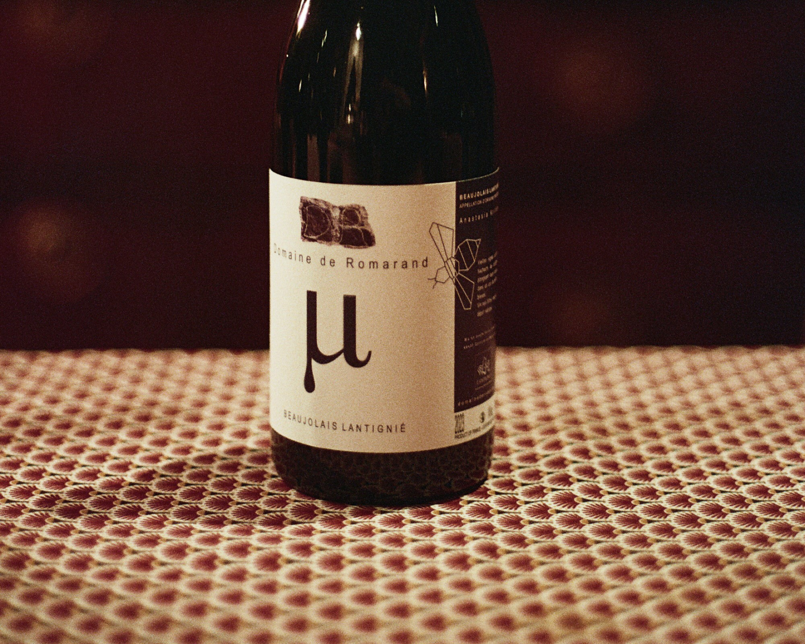

Mi - Domaine de Romarand
Music
“A dark winter evening:
a heated room filled with soft light,
the stove burning, silence outside.”
Like music, literature and film, wine can evoke a particular world of
feelings and associations. Some music enhances a certain mood and feels
more fitting in specific moments: some albums I only play in winter,
others when darkness falls, and others again in the morning, when the
first rays of sunlight illuminate the world.
For each wine, I therefore collect a series of associations: a song, a
painting, a film, a colour, a landscape or a poem. Perhaps the same wine
will evoke something entirely different for you.
Be part of the conversation and explore the pairings below, or suggest
your own by visiting the full suggestion page.

Music
“A dark winter evening:
a heated room filled with soft light,
the stove burning, silence outside.”
Painting
“The sultry warmth of a Mediterranean day.
Dry herbs between sun-warmed stones.
A night slowly descending.”
No pairings are available in this category yet.